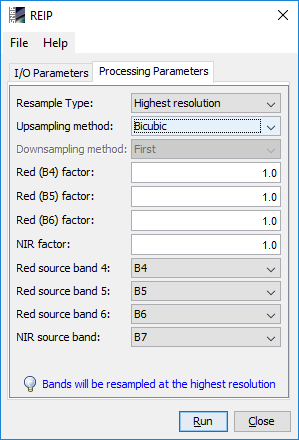

| Thematic Land Processing |
|
Radiometric indices are quantitative measures of features that are obtained by combining several spectral bands, features that are not otherwise obvious if using only one band.
The indices provided with Sentinel-2 Toolbox, detailed below, are grouped into three categories:
These indices share the same graphical interface, as in the next figure:
|  |
|
In case of bands with different resolutions are employed, a message is displayed at the bottom of the window, as it can be seen on the above figure.
If no resample is needed, the parameters Resample Type, Upsampling Method and Downsampling Method will be disabled.
The parameters Upsampling Method and Downsampling Method are mutually exclusive.
The following table summarizes the radiometric indices provided with the toolbox:
Name |
Purpose/Classification |
Short Description |
Type |
NDVI |
Normalized Difference Vegetation Index |
The well-known classical vegetation index. The NDVI composes a measurement for the photosynthetic activity and is strongly in correlation with density and vitality of the vegetation |
Vegetation Index |
DVI |
Difference Vegetation Index |
This index is sensitive to the amount of vegetation |
Vegetation Index |
RVI |
Ratio Vegetation Index |
The simplest ratio-based index, it is also called the Simple Ratio (SR). It indicates the amount of vegetation. It also reduces the effects of atmosphere and topography |
Vegetation Index |
PVI |
Perpendicular Vegetation Index |
This index could be considered a generalization of the DVI, which allows for soil lines of different slopes. |
Vegetation Index |
IPVI |
Infrared Percentage Vegetation Index |
This index is functionally equivalent to NDVI and RVI, but it only ranges in value from 0.0 - 1.0 |
Vegetation Index |
WDVI |
Weighted Difference Vegetation Index |
WDVI is a mathematically simpler version of PVI, but it has an unrestricted range |
Vegetation Index |
TNDVI |
Transformed Normalized Difference Vegetation Index |
TNDVI algorithm indicates a relation between the amount of green biomass that is found in a pixel |
Vegetation Index |
GNDVI |
Green Normalized Difference Vegetation Index |
GNDVI is more sensible than NDVI to identify different concentration rates of chlorophyll, which is highly correlated at nitrogen. |
Vegetation Index |
GEMI |
Global Environmental Monitoring Index |
Was developed to eliminate the need for a detailed atmospheric correction by constructing a stock atmospheric correction for the vegetation index |
Vegetation Index |
ARVI |
Atmospherically Resistant Vegetation Index |
This index takes advantage of the different scattering responses from the blue and red band to retrieve information regarding the atmosphere opacity |
Vegetation Index |
NDI45 |
Normalized Difference Index |
This index algorithm is more linear, with less saturation at higher values than the NDVI. |
Vegetation Index |
MTCI |
Meris Terrestrial Chlorophyll Index |
This index was developed for estimating chlorophyll content from MERIS (Medium Resolution Imaging Spectrometer) data |
Vegetation Index |
MCARI |
Modified Chlorophyll Absorption Ratio Index |
This index was developed to be responsive to both leaf chlorophyll concentrations and ground reflectance. |
Vegetation Index |
REIP |
Red-Edge Inflection Point index |
This index was developed for applications in biomass and nitrogen (N) uptake measurment/management in heterogeneous fields. |
Vegetation Index |
S2REP |
The Sentinel-2 Red-Edge Position index |
This index is based on linear interpolation as presented by Guyot and Baret (1988). The reflectance at the inflexion point is estimated and in turn, the REP is retrieved through interpolation of S-2 band 5 and 6 which are positioned on the RE slope. |
Vegetation Index |
IRECI |
Inverted Red-Edge Chlorophyll Index |
This index algorithm incorporates the reflectance in four bands to estimate canopy chlorophyll content |
Vegetation Index |
PSSRa |
Pigment Specific Simple Ratio (chlorophyll) index. |
This index was developed to investigate the potential of a range of spectral approaches for quantifying pigments at the scale of the whole plant canopy. |
Vegetation Index |
SAVI |
Soil Adjusted Vegetation Index |
This index attempts to be a hybrid between the ratio-based indices and the perpendicular indices |
Soil Index |
TSAVI |
Transformed Soil Adjusted Vegetation Index |
This index assumes that the soil line has arbitrary slope and intercept, and it makes use of these values to adjust the vegetation index |
Soil Index |
MSAVI |
Modified Soil Adjusted Vegetation Index |
The basic idea of MSAVI was to provide a variable correction factor L. The correction factor used is based on the product of NDVI and WDVI |
Soil Index |
MSAVI2 |
The second Modified Soil Adjusted Vegetation Index |
Basically, it is used an iterative process and substitute 1 - MSAVI(n-1) as the L factor in MSAVI(n). |
Soil Index |
BI |
Brightness Index |
This index is representing the average of the brightness of a satellite image |
Soil Index |
BI2 |
The second Brightness Index |
This index is representing the average of the brightness of a satellite image. The result looks like a panchromatique image with the same resolution of the original image. |
Soil Index |
RI |
Redness Index |
The Redness Index algorithm was developed to identify soil colour variations |
Soil Index |
CI |
Colour Index |
The Colour Index algorithm was developed to differentiate soils in the field |
Soil Index |
NDWI |
Normalized Difference Water Index |
This index is a measure of liquid water molecules in vegetation canopies that interacted with the incoming solar radiation. |
Water Index |
NDWI2 |
The second Normalized Difference Water Index |
This index was developed to detect surface waters in wetland environments and to allow for the measurement of surface water extent. |
Water Index |
MNDWI |
Modified Normalized Difference Water Index |
This index was developed to enhance open water features, while efficiently suppressing and even removing built-up land noise as well as vegetation and soil noise. |
Water Index |
NDPI |
Normalized Difference Pond Index |
The NDPI algorithm makes it possible not only to distinguish small ponds and water bodies (down to 0.01 ha), but also to differentiate vegetation inside ponds from that in their surroundings |
Water Index |
NDTI |
Normalized Difference Turbidity Index |
This index was developed to allow for the measurement of water turbidity. |
Water Index |